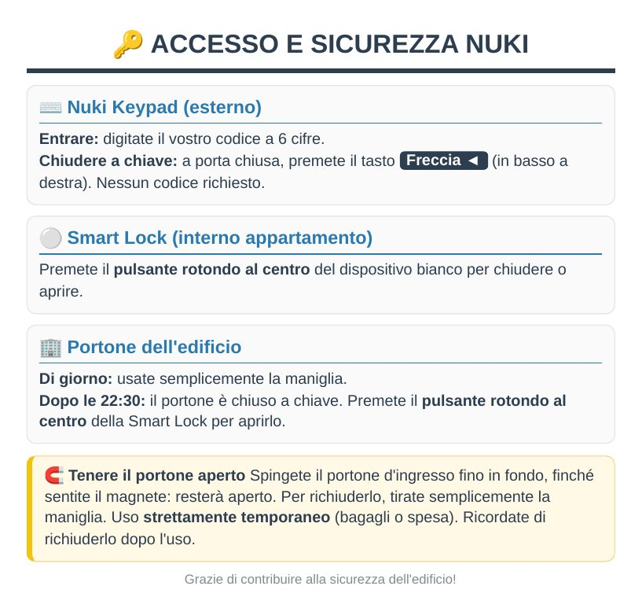
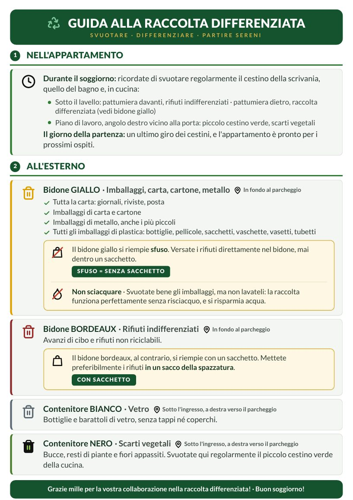

- 1Parcheggiate nel posto auto privato, proprio accanto alla casa.
- 2Raggiungete la porta d'ingresso dell'appartamento, al piano terra.
- 3Digitate il vostro codice personale sulla serratura smart Nuki, poi premete il tasto di conferma. Il codice vi viene inviato il giorno prima dell'arrivo.
- 4La porta si sblocca. Benvenuti!

- 1Il vostro codice viene disattivato automaticamente alle 11:00. Vi serve un po' più di tempo? Avvisatemi in anticipo e modificherò l'orario con piacere.
- 2Se avete usato la lavastoviglie, avviatela con le ultime stoviglie: penserò io a svuotarla.
- 3Lasciate le lenzuola sui letti, non serve toglierle. Mettete gli asciugamani e gli strofinacci usati nell'apposito contenitore.
- 4Differenziate i rifiuti seguendo le indicazioni affisse in cucina.
- 5Se avete usato il cancello, rimettete il telecomando nella ciotolina nera sulla consolle dell'ingresso.
- 6Controllate che le finestre siano chiuse.
- 7Uscendo, chiudete la porta e premete la freccia bianca sulla tastiera: è così che si blocca.
Connessione ultraveloce in tutto l'appartamento: smart working, videoconferenze e streaming 4K.
- Zona giorno: divano angolare, Smart TV, tavolo rotondo per quattro.
- Cucina: attrezzata, aperta su un balcone soleggiato con set da giardino.
- Camera 1: letto queen size 160 × 200, scrivania.
- Camera 2: due letti singoli 90 × 200, armadio.
- Bagno: doccia a filo pavimento, WC, scaldasalviette, asciugacapelli.
- Ingresso: panca e pantofole per tutta la famiglia.
Passate il mouse su un apparecchio contrassegnato da ⓘ per vederne le istruzioni, oppure toccatelo per aprirle più in basso.
Serratura: il vostro codice si attiva all'orario di arrivo e si disattiva all'orario di partenza. Digitatelo, poi premete il tasto di conferma.
Cancello motorizzato: il telecomando è nella ciotolina nera sulla consolle dell'ingresso. Una pressione per aprire, una per chiudere.
Ruotate il selettore di sinistra per scegliere la modalità di cottura, poi il selettore della temperatura. Il display centrale mostra l'ora e un timer: impostatelo con i tasti <, OK e >. La spia rossa resta accesa durante il riscaldamento e si spegne quando la temperatura è raggiunta.
Cliccate per aprirle per intero🍽️ Lavastoviglie🍽️ LavastoviglieEliminate i residui di cibo e caricate i cestelli. Mettete una pastiglia nello scomparto del detersivo. Scegliete il programma sul pannello: 65°C per pentole molto sporche, ECO 50°C per l'uso quotidiano ed economico, verre 50°C (vetro) per le stoviglie delicate. Premete il tasto di accensione, poi confermate.
Sollevate la leva per aprire il vano capsula, inserite una capsula e richiudete. Posizionate la tazza, poi premete espresso (corto) o lungo. Alcune capsule di benvenuto vi aspettano nel cassetto sotto la macchina.
Cliccate per aprirle per intero🫧 Lavasciuga🫧 LavasciugaLavare: aprite l'oblò e caricate il bucato (al massimo tre quarti del cestello). Ruotate il selettore centrale: COTON (cotone) o ECO 40-60 per l'uso quotidiano, MIX per tessuti misti, EXPRESS 15' per un lavaggio rapido. Premete il tasto di avvio (▷Ⅱ).
Asciugare: scegliete SÉCH. COTON (asciugatura cotone) per la sola asciugatura, oppure LAV.+SÉCH. (lavaggio + asciugatura) per lavare e asciugare in un unico ciclo. Il cassetto del detersivo è in alto a sinistra.
Riempite il serbatoio (possibile in qualsiasi momento). Premete il tasto di accensione e attendete circa 2 minuti, finché la spia resta fissa.
Su richiesta prima del vostro arrivo. L'apparecchio è su ruote: potete spostarlo da una stanza all'altra, per esempio in camera per la notte.
Kit finestra, indispensabile: aprite la finestra più vicina, appoggiate la tavola bianca in PVC in orizzontale sul davanzale, poi abbassate la tapparella finché non poggia sulla tavola. Il tubo espelle l'aria calda attraverso la griglia.
Accensione: tasto ON/OFF del telecomando bianco Meliconi (o dell'apparecchio), frecce arancioni TEMP ▲ ▼ per la temperatura, modalità Froid (freddo, fiocco di neve ❄ sul display).
Riscaldamento a gas con termosifoni in tutto l'appartamento. Non c'è un termostato a parete: regolate la temperatura di ogni stanza con la valvola termostatica del termosifone; da 19 a 20 °C garantiscono un buon comfort.
Accendete con il telecomando. La TV dà accesso a Freebox TV (oltre 230 canali) e alle piattaforme di streaming, senza nulla da configurare.
- In italiano: Rai Uno (543), Rai Due (544), Rai Tre (545).
- In inglese: France 24 English (341), BBC World News (352), Sky News (353), CNN (354).
- In tedesco: ZDF (616), Das Erste (617).
- Canali francesi: tutti i canali in chiaro (TF1, France 2, M6…) dal canale 1 al 27.
- Cinema gratuito: OQEE Ciné, oltre 500 film e serie ad accesso libero, direttamente dal menu.
- Netflix e Prime Video: i miei abbonamenti sono a vostra disposizione, il profilo «RdcAirbnb» si apre automaticamente. È installato anche YouTube.
Per cambiare sorgente usate il tasto Source. Il manuale completo è consultabile tramite il codice QR del libretto riposto nel mobile TV.
Cliccate per aprirle per interoToccate un elettrodomestico per visualizzarne le istruzioni.
🫧 LavasciugaSamsung
Lavare: aprite l'oblò e caricate il bucato (al massimo tre quarti del cestello). Ruotate il selettore centrale: COTON (cotone) o ECO 40-60 per l'uso quotidiano, MIX per tessuti misti, EXPRESS 15' per un lavaggio rapido. Premete il tasto di avvio (▷Ⅱ).
Asciugare: scegliete SÉCH. COTON (asciugatura cotone) per la sola asciugatura, oppure LAV.+SÉCH. (lavaggio + asciugatura) per lavare e asciugare in un unico ciclo. Il cassetto del detersivo è in alto a sinistra.
🍽️ LavastoviglieThomson TDW4760
Eliminate i residui di cibo e caricate i cestelli. Mettete una pastiglia nello scomparto del detersivo. Scegliete il programma sul pannello: 65°C per pentole molto sporche, ECO 50°C per l'uso quotidiano ed economico, verre 50°C (vetro) per le stoviglie delicate. Premete il tasto di accensione, poi confermate.
🍳 FornoAmica ACV6005
Ruotate il selettore di sinistra per scegliere la modalità di cottura, poi il selettore della temperatura. Il display centrale mostra l'ora e un timer: impostatelo con i tasti <, OK e >. La spia rossa resta accesa durante il riscaldamento e si spegne quando la temperatura è raggiunta.
☕ Macchina NespressoKrups
Sollevate la leva per aprire il vano capsula, inserite una capsula e richiudete. Posizionate la tazza, poi premete espresso (corto) o lungo. Alcune capsule di benvenuto vi aspettano nel cassetto sotto la macchina.
📺 Smart TVHisense
Accendete con il telecomando. La TV dà accesso a Freebox TV (oltre 230 canali) e alle piattaforme di streaming, senza nulla da configurare.
- In italiano: Rai Uno (543), Rai Due (544), Rai Tre (545).
- In inglese: France 24 English (341), BBC World News (352), Sky News (353), CNN (354).
- In tedesco: ZDF (616), Das Erste (617).
- Canali francesi: tutti i canali in chiaro (TF1, France 2, M6…) dal canale 1 al 27.
- Cinema gratuito: OQEE Ciné, oltre 500 film e serie ad accesso libero, direttamente dal menu.
- Netflix e Prime Video: i miei abbonamenti sono a vostra disposizione, il profilo «RdcAirbnb» si apre automaticamente. È installato anche YouTube.
Per cambiare sorgente usate il tasto Source. Il manuale completo è consultabile tramite il codice QR del libretto riposto nel mobile TV.
❄️ Climatizzatore portatileBeko
Su richiesta prima del vostro arrivo. L'apparecchio è su ruote: potete spostarlo da una stanza all'altra, per esempio in camera per la notte.
Kit finestra, indispensabile: aprite la finestra più vicina, appoggiate la tavola bianca in PVC in orizzontale sul davanzale, poi abbassate la tapparella finché non poggia sulla tavola. Il tubo espelle l'aria calda attraverso la griglia.
Accensione: tasto ON/OFF del telecomando bianco Meliconi (o dell'apparecchio), frecce arancioni TEMP ▲ ▼ per la temperatura, modalità Froid (freddo, fiocco di neve ❄ sul display).
🔥 Piano in vetroceramica
Toccate il tasto di accensione/spegnimento, scegliete la zona di cottura, poi regolate la potenza con + e − (da 1 a 9). Usate una pentola a fondo piatto adatta alla zona. A fine cottura tornate a 0 e spegnete.
🌡️ Riscaldamento
Riscaldamento a gas con termosifoni in tutto l'appartamento. Non c'è un termostato a parete: regolate la temperatura di ogni stanza con la valvola termostatica del termosifone; da 19 a 20 °C garantiscono un buon comfort.
🔑 Serratura Nuki e cancello
Serratura: il vostro codice si attiva all'orario di arrivo e si disattiva all'orario di partenza. Digitatelo, poi premete il tasto di conferma.
Cancello motorizzato: il telecomando è nella ciotolina nera sulla consolle dell'ingresso. Una pressione per aprire, una per chiudere.
🧊 Frigorifero con congelatoreProline
Combinato no frost. Il congelatore è in basso. Per favore, chiudete bene le porte.
🧹 Scopa elettricaDreame R10 Pro
Senza fili, riposta sulla sua base di ricarica. Tasto di accensione sull'impugnatura. Dopo l'uso svuotate il contenitore con il tasto di espulsione, poi rimettete l'aspirapolvere sulla base.
👔 Ferro da stiro con caldaiaPhilips PerfectCare Pure
Riempite il serbatoio (possibile in qualsiasi momento). Premete il tasto di accensione e attendete circa 2 minuti, finché la spia resta fissa.
- Divieto assoluto di fumare e di svapare, sia all'interno che all'esterno: balcone e dintorni della casa compresi. Per favore, non gettate mozziconi a terra.
- Animali non ammessi.
- Silenzio dalle 22:00 alle 7:00: i vicini abitano proprio accanto.
- Feste non consentite. L'alloggio è riservato alle persone indicate nella prenotazione.
- Chiudete finestre e persiane quando uscite e di notte.
- In caso di problemi (perdita, guasto), avvisatemi subito.
- Spegnete le luci e gli apparecchi che non usate.
- La raccolta differenziata è attiva, con le indicazioni affisse in cucina. Per gli imballaggi riciclabili usate di preferenza il bidone giallo all'ingresso della cucina, a destra sotto il piano di lavoro. Sotto il lavello, il bidone davanti è per i rifiuti indifferenziati, quello dietro per gli altri imballaggi e il piccolo contenitore verde per i rifiuti alimentari.
- Prodotti di cortesia e per la pulizia bio, in piccoli formati.
- Spegnete il riscaldamento o il climatizzatore quando le finestre sono aperte o quando siete fuori.
- Docce brevi, lavastoviglie e lavatrice ben piene: piccoli gesti che contano.
- Il centro città è a 15 minuti a piedi, Strasburgo è raggiungibile con il TER diretto e la foresta di Haguenau si scopre in bicicletta.

Haguenau, capitale dell'Alsazia del Nord, ha un vivace centro storico a 15 minuti a piedi. Strasburgo dista circa 40 min in auto, oppure da 21 a 30 min con il TER diretto. L'appartamento occupa il piano terra di una casa degli anni Trenta ristrutturata, con isolamento a cappotto.
 🎄 Mercatino di Natale di HaguenauDate, orari e programma · jds.fr (in francese) ↗
🎄 Mercatino di Natale di HaguenauDate, orari e programma · jds.fr (in francese) ↗
L'appartamento è al piano terra e tutte le stanze sono sullo stesso livello, con una doccia a filo pavimento. Dall'esterno vi si accede salendo alcuni gradini. Il posto auto privato si trova proprio accanto alla casa. L'alloggio non è adatto alle sedie a rotelle. Per qualsiasi domanda sull'accesso, contattatemi.

oppure tramite la messaggistica della vostra piattaforma di prenotazione.
Vi auguro un ottimo soggiorno a Haguenau e in Alsazia!